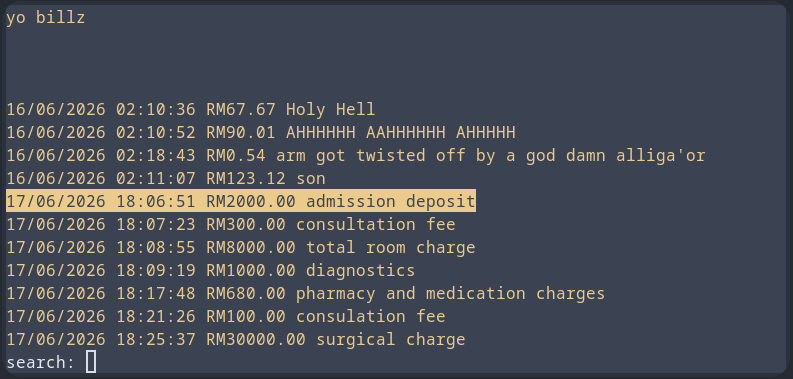
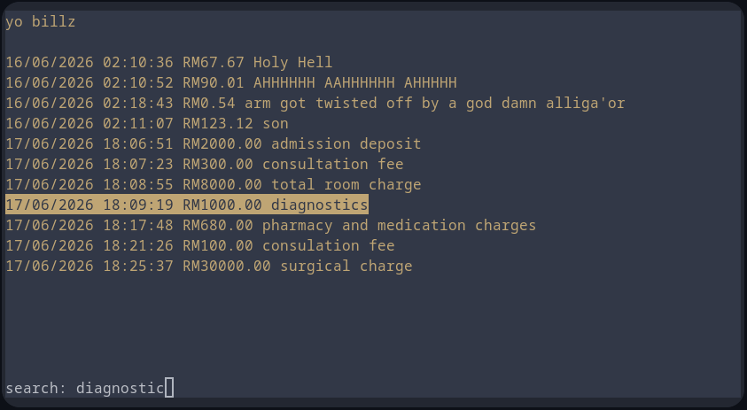
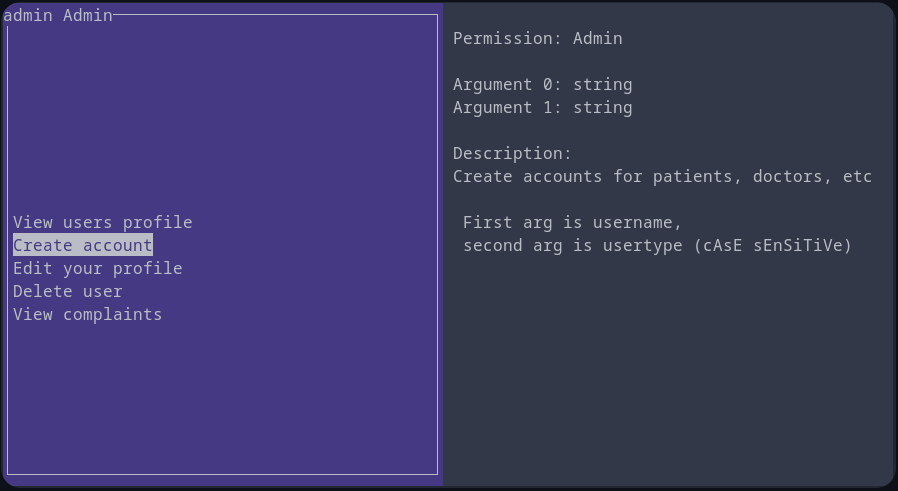
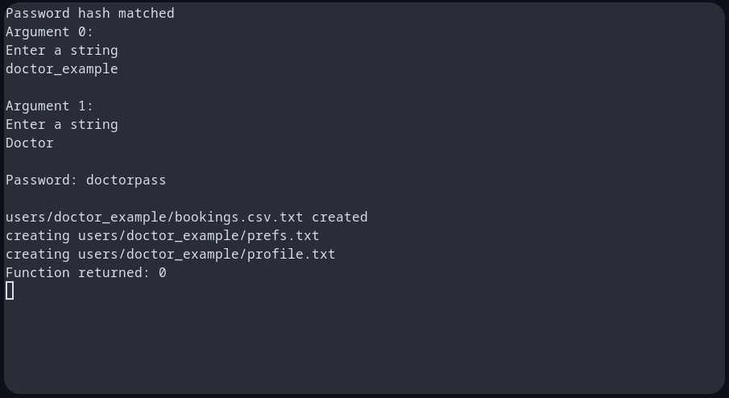
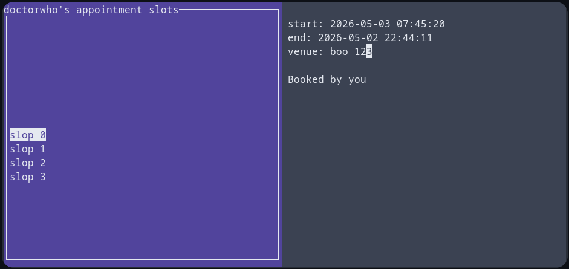
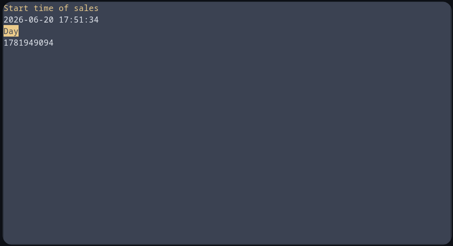

|
Hospital Management System
|
|
Hospital Management System
|
TIP: Do CTRL+C (sigint) to exit the program or cancel an operation while using a TUI
The binary only requires the DB folder and credentials file, and you can name the binary whatever you want
It's very important that the binary is in the same dir as your DB file!
This will show the menu first:
To go straight to login or register:
To login into an account
Press arrow keys to change selection, and enter to confirm selection. CTRL+C to cancel
Your selection will be centered and highlighted
Type and backspace to search for options. It does fuzzy search on your query and every option, then finds the closest option for your query.
Partial matching won't always work, but it is guaranteed that it will find exact matches


Up and down arrow keys to select fields.
When pressing enter, the user can switch between EDIT mode and SELECT mode.
During EDIT mode, the user can use their keyboard to edit the value.


You will not be able to edit some fields

The left panel will show commands available to your user type, the right panel will show the command's arguments and description.
Press arrow keys to change selection, and enter to confirm selection.

If your command has arguments, you will be prompted to enter the arguments, otherwise the command will run immediately.
You will be dropped back to normal terminal for scanf.

After the command execution is done, you will be given an opportunity to view the command's output, then press any key to go back to command menu (or enter, if you're on windows.)
The command menu doesn't clear the terminal every time, so you may see output from previous commands or other things, like "Password hash matched" when you log in
Up and down arrow keys to select slot
When pressing enter on a slot, you might be given options for what to do with the slots, with simple select
As a patient, you will not be able to see the information of slot that other patient selected.

Left and right arrow keys to change the time quantity, then up and down arrow keys to modify the time with that quantity. Press enter to confirm.
